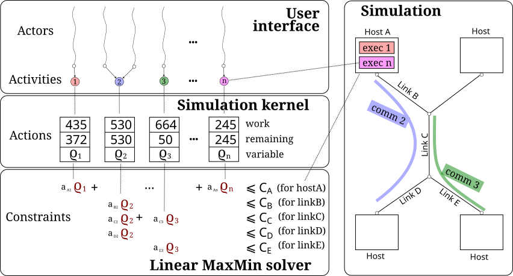

SimGrid 模型
This page focuses on the performance models that compute the duration of all activities throughout the simulation, based on the platform characteristics and on the other activities that concurrently use the resources. If you are looking for information on other kinds of models (such as routing models or compute model), please refer to the bottom of this page.
Modeled resources
The primary objective of SimGrid is to provide simulated timing information for the usage of three kinds of resources: networks, CPUs, and disks.
The network models have been improved and regularly validated for almost 20 years. It should be possible to get accurate simulations once you properly calibrate the models for your settings. As detailed in the next sections, SimGrid provides several network models. Two plugins can also be used to compute the energy consumption of the network: one for wired networks and another one for Wi-Fi networks. Note that at first some users find the way in which SimGrid simulates TCP performance to be counter-intuitive; in our experience this is due these users misunderstandings the (complex) behavior of TCP in real networks.
The CPU models are less developed in SimGrid. Through the S4U API, the user can specify amounts of computational work (expressed in FLOPs, for floating point operations) that each computation “consumes”, and the model simply divides this amount by a CPU’s FLOP rate to compute the duration of the computation (accounting for number of cores and all concurrent computations with a time-sharing model). In SMPI, the user code is automatically timed, and the computing speed of the host machine is used to evaluate the corresponding amount of FLOPs. This model should be sufficient for most users, even though assuming a constant FLOP rate for each machine remains a crude simplification (in reality, the FLOP rate varies because of I/O, memory, and cache effects). It is possible to overcome this simplification, but the required calibration process is rather intricate and not documented yet (feel free to contact the community). In the future, more advanced models may be added but the existing model have proven good enough over the last two decades. The CPU energy consumption can be computed with the relevant plugin.
The disk models in SimGrid have been included more recently than those for networks and CPUs, but they should still prove useful to most users. Studies have shown that these models are sensitive to various conditions, and a calibration process is provided. As usual, you probably want to assess simulation accuracy through an appropriate validation campaign.
LMM-based Models
SimGrid aims at the sweet spot between simulation accuracy and simulation speed. In terms of accuracy, the goal is for simulations to report correct performance trends when comparing competing designs while placing minimal burden on the user. We also want to allow power users to fine tune the simulation models to achieve simulation results that are within 5% or less of what would be observed on a real platform. For example, we accurately determined the speedup achieved by the Tibidabo ARM-based cluster before it was even built. In terms of simulation speed, the goal it to be fast and scalable enough to allow the study of modern IT systems at scale. SimGrid was, for example, used to simulate a Chord ring with millions of actors (even though results were not really more instructive than those obtained at smaller scales), or a qualification run at full-scale of the Stampede supercomputer.
Most SimGrid models are based on a linear max-min solver (LMM), as depicted below. The actors’ activities are represented by actions in the simulation kernel, accounting for both the initial amount of work of the corresponding activity (in FLOPs for CPU activities or bytes for network and disk activities), and the currently remaining amount of work to process.
At each simulation step, the instantaneous speed for each action is computed according to the model. A set of constraints is used to express resource capacity constraints, i.e., that the cumulative instantaneous consumption of a given resource by a set actions must remain below the nominal capacity of that resource. In the example below, it is stated that the compute speed \(\varrho_1\) of activity 1 plus the compute speed \(\varrho_n\) of activity \(n\), which both run on host A, must remain smaller than that host’s total compute speed \(C_A\).

There are many valuations of \(\varrho_1, \ldots{}, \varrho_n\) that must respect sets of constraints. SimGrid usually computes the instantaneous speeds according to a Max-Min objective function, that is, maximizing the minimum over all \(\varrho_i\). The coefficients associated to each variable in the inequalities are used to model some performance effects, such as the fact that TCP tends to favor communications with small RTTs. These coefficients are computed from both hard-coded values and latency and bandwidth factors (more details on network performance modeling are given in the next section).
Once the instantaneous speeds are computed for all acttions, the simulation kernel computes the earliest terminating action given their respective speeds and remaining amounts of work. The simulated time is then updated along with remaning amounts of work. At this point, some actions have no remaining work and are removed from the LMM. The corresponding activities thus terminate, which in turn unblocks the corresponding actors that can then continue executing.
Most of the SimGrid models build upon the LMM solver, which they adapt and configure in various ways. For CPU and disk activities, the LMM-based models are respectively named Cas01 and S19. The existing network models are described in the next section.
The TCP models
SimGrid provides several network performance models that compute the time taken by each communication in isolation. raw is the simplest one. It does not capture any fancy effect, and uses overly simplified equations. It is mostly useful when you want to model non-TCP communications such as an intra-node PCI communication bus. CM02 is the simplest model capturing some TCP-specific effects, such as windowing effects, but does not introduce any correction factors. This model should be used if you prefer human-understandable TCP predictions over realistic ones. LV08 (the default model) uses constant factors that are intended to capture common effects such as slow-start, the fact that TCP headers reduce the effective bandwidth, or TCP’s ACK messages. SMPI uses more advanced factors that also capture the MPI-specific effects such as the switch between the eager vs. rendez-vous communication modes. You can choose the model on via command-line arguments, and each model can be further configured.
The LMM solver is then used as described above to compute the effect of contention on the communication time when using TCP.
For the sake of realism, the sharing on saturated links is not necessarily a fair sharing
(unless when weight-S=0, in which case the following mechanism is disabled).
Instead, flows receive an amount of bandwidth inversely proportional to their round trip time. This is modeled
in the LMM as a priority that depends on the weight-S parameter. More precisely, this
priority is computed for each flow as \(\displaystyle\sum_{l\in links}\left(Lat(l)+\frac{weightS}{Bandwidth(l)}\right)\), i.e., as the sum of the
latencies of all links traversed by the communication, plus the sum of weight-S over the bandwidth of each link along
the path. This dependency on the link bandwidths is for the model to account for the TCP protocol’s reactivity.
Regardless of the TCP model in used, the latency is paid beforehand. It is as if the communication only starts after a small delay that corresponds to the end-to-end latency. During that time, the communication has no impact on the links (i.e., the other communications are not slowed down, because there is no contention yet).
As an alternative to the above LMM-based models, it is possible to use the ns-3 simulator as a network model. ns-3 performs a much more detailed, packet-level simulation than the above models. As a result is is much slower but will produce more accurate results. Both simulators have time complexity that is linear in the size of their input, but ns-3 has a much larger input in case of large communications because it considers individual network packets. However, the above SimGrid models must be carefully calibrated if achieve very high accuracy is needed, while ns-3 is less demanding in this regard.
Raw network model
This simplistic network model states that the bandwidth is fairly shared between competing communications (max-min sharing), and the time to send a message is equal to \(latency + \frac{size}{bandwidth}\). This model is not realistic for TCP communications, as the many effects captured by the other SimGrid models are ignored. It is also not really realistic for UDP communications as it does not incur any packet loss that a real UDP communication would experience when the amount of exchanged data overpass the links capacity. Instead, this model is mostly useful to model the intra-node communication buses such as PCI. This allows to model a multi-CPU machine as a set of separate SimGrid hosts interconnected by such a raw network link.
CM02
This is a simple model of TCP performance, with two main features. The first one comes from the TCP windowing algorithm requesting the sender to stop sending packets when its TCP window is full. If the acknowledgment packets are returned in time to the sender, the TCP window has no impact on the performance, which is then only limited by link bandwidths. Otherwise, late acknowledgments will reduce the data transfer rate. The second model feature is called cross-traffic. It represents the impact of ACKs on the performance of the reverse direction. Indeed, a TCP communication from A to B induces ACK packets going from B to A and competing with the user data going from B to A. The impact of cross-traffic is further discussed when presenting the LV08 model below below.
SimGrid models the TCP windowing mechanism as follows: \(real\_BW = min(physical\_BW, \frac{TCP\_GAMMA}{2\times latency})\) The used bandwidth is either the physical bandwidth that is configured in the platform, or a value that represents a bandwidth limit due to late acknowledgments. This value is the maximal TCP window size (noted TCP Gamma in SimGrid) divided by the round-trip time (i.e. twice the one-way latency). The default value of TCP Gamma is 4194304. This value can be changed with the network/TCP-gamma configuration item.
If you want to disable this mechanism altogether (e.g.,to model UDP or memory operations), you should set TCP-gamma to 0. Otherwise, the time it takes to send 10 Gib of data over a 10 Gib/s link that is otherwise unused is computed as \(latency + \frac{size}{bandwidth}\), but the bandwidth in the denominator may be the physical one (10Gb/s) or the one induced by the TCP window, depending on the latency:
If the link latency is 0, the communication, expectedly, takes one second.
If the link latency is 0.00001s, \(\frac{gamma}{2\times lat}=209,715,200,000 \approx 209Gib/s\) which is larger than the physical bandwidth. So the physical bandwidth is used (the link is fully utilized) and the communication takes 1.00001s
If the link latency is 0.001s, \(\frac{gamma}{2\times lat}=2,097,152,000 \approx 2Gib/s\), which is smaller than the physical bandwidth. The communication thus fails to fully utilize the link and takes about 4.77s.
With a link latency of 0.1s, \(gamma/2\times lat \approx 21Mb/s\), so the communication takes about 476.84 + 0.1 seconds!
More cases are tested and their validity checked by the test
teshsuite/models/cm02-tcpgamma/cm02-tcpgamma.teshin our test suite.
For more details, please refer to “A Network Model for Simulation of Grid Application” by Henri Casanova and Loris Marchal (published in 2002, hence the model name).
LV08 (default)
This model builds on CM02 to model TCP windowing (see above). It also introduces corrections factors for further realism: latency-factor is 13.01, bandwidth-factor is 0.97 while weight-S is 20537. Lets consider the following platform:
<host id="A" speed="1Gf" />
<host id="B" speed="1Gf" />
<link id="link1" latency="10ms" bandwidth="1Mbps" />
<route src="A" dst="B">
<link_ctn id="link1" />
</route>
If host A sends 100kB (a hundred kilobytes, that is, 8e5 bits) to host B, one can expect that this communication would
take 0.81 seconds to complete according to a simple latency-plus-size-divided-by-bandwidth model (0.01 + 8e5/1e6 = 0.81 – the
size was converted from bytes to bits) since the latency is small enough to ensure that the physical bandwidth is used (see the
discussion on CM02 above). However, the LV08 model is more complex to account for three phenomena that directly impact the
simulation time:
The size of a message at the application level (i.e., 100kB in this example) is not the size that is actually transferred over the network. To mimic the fact that TCP and IP headers are added to each packet of the original payload, the TCP model of SimGrid empirically considers that only 97% of the nominal bandwidth are available. In other words, the size of your message is increased by a few percents, whichever this size.
In the real world, the TCP protocol is not able to fully exploit the bandwidth of a link from the emission of the first packet. To reflect this slow start phenomenon, the latency declared in the platform file is multiplied by a factor of 13.01. Here again, this is an empirically determined value that may not correspond to every TCP implementations on every networks. It can be tuned when more realistic simulated times for the transfer of short messages are needed though.
When data is transferred from A to B, some TCP ACK messages travel in the opposite direction. To reflect the impact of this cross-traffic, SimGrid simulates a flow from B to A that represents an additional bandwidth consumption of 0.05%. The route from B to A is implicitly declared in the platform file and uses the same link link1 as if the two hosts were connected through a communication bus. The bandwidth share allocated to a data transfer from A to B is then the available bandwidth of link1 (i.e., 97% of the nominal bandwidth of 1Mb/s) divided by 1.05 (i.e., the total consumption). This feature, activated by default, can be disabled by adding the
--cfg=network/crosstraffic:0flag to the command line.
As a consequence, the time to transfer 100kB from A to B as simulated by the default TCP model of SimGrid is not 0.81 seconds but
0.01 * 13.01 + 800000 / ((0.97 * 1e6) / 1.05) = 0.996079 seconds.
For more details, please refer to “Accuracy study and improvement of network simulation in the SimGrid framework” by Arnaud Legrand and Pedro Velho.
Parallel tasks (L07)
This model is rather different from the other LMM models because it uses another objective function, which is called bottleneck. This is because this model is intended to be used for parallel tasks, that is sets of actions that mix flops and bytes, while the Max-Min objective function requires that all variables be expressed using the same unit (which is why in the implementation we have one LMM system per resource kind).
Use the relevant configuration to select this model in your simulation.
WiFi zones
In SimGrid, WiFi networks are modeled with WiFi zones, where a zone contains the access point of the WiFi network and the hosts connected to it (called stations in the WiFi world). The network inside a WiFi zone is modeled by declaring a single regular link with a specific attribute. This link is then added to the routes to and from the stations within this WiFi zone. The main difference of WiFi networks, when compared to wired networks, is that performance is not determined by link bandwidths and latencies but by both the access point WiFi characteristics and the distance between that access point and a given station.
In SimGrid, WiFi zones can be used with the LMM-based models or the ns-3-based model.
Declaring a WiFi zone
To declare a new WiFi network, simply declare a network zone with the WIFI routing attribute.
<zone id="SSID_1" routing="WIFI">
Inside this zone you must declare which host or router will be the access point of the WiFi network.
<prop id="access_point" value="alice"/>
Then simply declare the stations (hosts) and routers inside the WiFi network. Remember that one must have the same name as the “access point” property.
<router id="alice" speed="1Gf"/>
<host id="STA0-0" speed="1Gf"/>
<host id="STA0-1" speed="1Gf"/>
Finally, close the WiFi zone.
</zone>
The WiFi zone may be connected to another zone using a traditional link and a zoneRoute. Note that the connection between two zones is always wired.
<link id="wireline" bandwidth="100Mbps" latency="2ms" sharing_policy="SHARED"/>
<zoneRoute src="SSID_1" dst="SSID_2" gw_src="alice" gw_dst="bob">
<link_ctn id="wireline"/>
</zoneRoute>
WiFi network performance
The performance of a wifi network is controlled by the three following properties:
mcs(Modulation and Coding Scheme) is a property of the WiFi zone. Roughly speaking, it defines the speed at which the access point exchanges data with all the stations. It depends on the access point’s model and configuration. Possible values for mcs can be found on Wikipedia for example.
By default,mcs=3.
nss(Number of Spatial Streams, or number of antennas) is another property of the WiFi zone. It defines the amount of simultaneous data streams that the access point can sustain. Not all values of MCS and NSS are valid nor compatible (cf. 802.11n standard).
By default,nss=1.
wifi_distanceis the distance from a station to the access point. Since each station can have its own specific value it is a property of the stations declared inside the WiFi zone.
By default,wifi_distance=10.
Here is an example of a zone with non-default mcs and nss values.
<zone id="SSID_1" routing="WIFI">
<prop id="access_point" value="alice"/>
<prop id="mcs" value="2"/>
<prop id="nss" value="2"/>
...
</zone>
Here is an example of setting the wifi_distance of a given station.
<host id="STA0-0" speed="1Gf">
<prop id="wifi_distance" value="37"/>
</host>
Constant-time model
This model is one of the few SimGrid network models that is not based on the LMM solver. In this model, all communication take a constant time (one second by default). It provides the lowest level of realism, but is faster and much simpler to understand. This model may prove interesting though if you plan to study abstract distributed algorithms such as leader election or causal broadcast.
ns-3 as a SimGrid model
The ns-3 based model is the most accurate network model in SimGrid. It relies on the well-known ns-3 packet-level network simulator to compute full timing information related to network transfers. This model is much slower than the LMM-based models. This is because ns-3 simulates the movement of every network packet involved in every communication, while the LMM-based models only recompute the respective instantaneous speeds of the currently ongoing communications when a communication starts or stops. In other terms, both SimGrid and ns-3 are fast and highly optimized, but while SimGrid only depends on application-level events (starting and stoping of communications), ns-3 depends on network-level events (sending a packet).
You need to install ns-3 and recompile SimGrid accordingly to use this model.
The SimGrid/ns-3 binding only contains features that are common to both systems. Not all ns-3 models are available from SimGrid (only the TCP and WiFi ones are), while not all SimGrid platform files can be used in conjunction with ns-3 (routes must be of length 1). Note also that the platform built in ns-3 from the SimGrid description is very basic. Finally, communicating from a host to itself is forbidden in ns-3, so every such communication is simulated to take zero time.
By default, the ns-3 model in SimGrid is not idempotent, unless you patch your version of ns-3 with [this patch](https://gitlab.com/nsnam/ns-3-dev/-/merge_requests/1338). It is perfectly OK to have a non-idempotent model in SimGrid as long as you only have only one such model, and as long as you don’t use utterly advanced things in SimGrid. If you do want to have an idempotent ns-3, apply the previously mentioned patch, and recompile SimGrid. It should detect the patch and react accordingly.
Compiling the ns-3/SimGrid binding
Installing ns-3
SimGrid requires ns-3 version 3.26 or higher, and you probably want the most
recent version of both SimGrid and ns-3. While the Debian package of SimGrid
does not have the ns-3 bindings activated, you can still use the packaged version
of ns-3 by grabbing the libns3-dev ns3 packages. Alternatively, you can
install ns-3 from scratch (see the ns-3 documentation).
Enabling ns-3 in SimGrid
SimGrid must be recompiled with the enable_ns3 option activated in cmake.
Optionally, use NS3_HINT to tell cmake where ns3 is installed on
your disk.
$ cmake . -Denable_ns3=ON -DNS3_HINT=/opt/ns3 # or change the path if needed
cmake will report whether ns-3 was found,
and this information is also available in include/simgrid/config.h
If your local copy defines the variable SIMGRID_HAVE_NS3 to 1, then ns-3
was correctly detected. Otherwise, explore CMakeFiles/CMakeOutput.log and
CMakeFiles/CMakeError.log to diagnose the problem.
Test that ns-3 was successfully integrated with the following command (executed from your SimGrid build directory). It will run all SimGrid tests that are related to the ns-3 integration. If no test is run at all, then ns-3 is disabled in cmake.
$ ctest -R ns3
Troubleshooting
If you use a version of ns-3 that is not known to SimGrid yet, edit
tools/cmake/Modules/FindNS3.cmake in your SimGrid tree, according to the
comments on top of this file. Conversely, if something goes wrong with an old
version of either SimGrid or ns-3, try upgrading everything.
Note that there is a known bug with the version 3.31 of ns3 when it is built with
MPI support, like it is with the libns3-dev package in Debian 11 « Bullseye ».
A simple workaround is to edit the file
/usr/include/ns3.31/ns3/point-to-point-helper.h to remove the #ifdef NS3_MPI
include guard. This can be achieved with the following command (as root):
# sed -i '/^#ifdef NS3_MPI/,+2s,^#,//&,' /usr/include/ns3.31/ns3/point-to-point-helper.h
Using ns-3 from SimGrid
Platform files compatibility
Any route with more than one hop will be ignored when using ns-3. They are harmless, but you still need to connect your hosts using one-hop routes. The best solution is to add routers to split your route. Here is an example of an invalid platform:
<?xml version='1.0'?>
<!DOCTYPE platform SYSTEM "https://simgrid.org/simgrid.dtd">
<platform version="4.1">
<zone id="zone0" routing="Floyd">
<host id="alice" speed="1Gf" />
<host id="bob" speed="1Gf" />
<link id="l1" bandwidth="1Mbps" latency="5ms" />
<link id="l2" bandwidth="1Mbps" latency="5ms" />
<route src="alice" dst="bob">
<link_ctn id="l1"/> <!-- !!!! IGNORED WHEN USED WITH ns-3 !!!! -->
<link_ctn id="l2"/> <!-- !!!! ROUTES MUST CONTAIN ONE LINK ONLY !!!! -->
</route>
</zone>
</platform>
This platform file can be reformulated as follows to make it usable with the ns-3 binding.
There is no direct connection from alice to bob, but that’s OK because ns-3
automatically routes from point to point (using
ns3::Ipv4GlobalRoutingHelper::PopulateRoutingTables).
<?xml version='1.0'?>
<!DOCTYPE platform SYSTEM "https://simgrid.org/simgrid.dtd">
<platform version="4.1">
<zone id="zone0" routing="Full">
<host id="alice" speed="1Gf" />
<host id="bob" speed="1Gf" />
<router id="r1" /> <!-- routers are compute-less hosts -->
<link id="l1" bandwidth="1Mbps" latency="5ms"/>
<link id="l2" bandwidth="1Mbps" latency="5ms"/>
<route src="alice" dst="r1">
<link_ctn id="l1"/>
</route>
<route src="r1" dst="bob">
<link_ctn id="l2"/>
</route>
</zone>
</platform>
Once your platform is OK, just change the network/model configuration option to ns-3 as follows. The other options can be used as usual.
$ ./network-ns3 --cfg=network/model:ns-3 (other parameters)
Many other files from the examples/platform directory are usable with the
ns-3 model, such as examples/platforms/dogbone.xml.
Check the file examples/cpp/network-ns3/network-ns3.tesh
to see which ones are used in our regression tests.
Alternatively, you can manually modify the ns-3 settings by retrieving
the ns-3 node from any given host with the
simgrid::get_ns3node_from_sghost() function (defined in
simgrid/plugins/ns3.hpp).
-
ns3::Ptr<ns3::Node> simgrid::get_ns3node_from_sghost(const simgrid::s4u::Host *host)
Returns the ns3 node from a SimGrid host
Random seed
It is possible to define a fixed or random seed for ns-3’s random number generator using the config tag.
<?xml version='1.0'?><!DOCTYPE platform SYSTEM "https://simgrid.org/simgrid.dtd">
<platform version="4.1">
<config>
<prop id = "network/model" value = "ns-3" />
<prop id = "ns3/seed" value = "time" />
</config>
...
</platform>
The first property defines that this platform will be used with the ns-3 model.
The second property defines the seed that will be used. If defined to time, as done above,
it will use a random seed.
Limitations
A ns-3 platform is automatically created based on the provided SimGrid platform. However, there are some known caveats:
The default values (e.g., TCP parameters) are the ns-3 default values.
ns-3 networks are routed using the shortest path algorithm, using
ns3::Ipv4GlobalRoutingHelper::PopulateRoutingTables.End hosts cannot have more than one network interface card. So, your SimGrid hosts should be connected to the platform through only one link. Otherwise, your SimGrid host will be considered as a router (FIXME: is it still true?).
Our goal is to keep the ns-3 plugin of SimGrid as easy (and hopefully readable) as possible. If the current state of development does not fit your needs, you can modify this plugin and/or create your own plugin based on the current one. If you come up with interesting improvements, please contribute them back.
Troubleshooting
If your simulation hangs in a communication, this is probably because one host is sending data that is not routable in your platform. Make sure that you only use routes of length 1, and that any host is connected to the platform. Arguably, SimGrid could detect this situation and report it, but unfortunately, this still has to be done.
FMI-based models
FMI is a standard to exchange models between simulators. If you want to plug such a model into SimGrid, you need the SimGrid-FMI external plugin. There is a specific documentation available for the plugin. This was used to accurately study a Smart grid through co-simulation: PandaPower was used to simulate the power grid, ns-3 was used to simulate the communication network while SimGrid was used to simulate the IT infrastructure. Please also refer to the relevant publication for more details.
Other kind of models
Models are key components of SimGrid, as they should be for any simulation framework, and beyond the above performance models SimGrid employs other models:
The routing models constitute advanced elements of the platform description. This description naturally entails components that are very related to the performance models. For instance, determining the execution time of a task obviously depends on the characteristics of the machine that executes this task. Furthermore, networking zones can be interconnected to compose larger platforms in a scalable way. Each of these zones can be given a specific routing model that efficiently computes the list of links forming a network path between two given hosts.
The model checker uses an abstraction of the performance simulations. Mc SimGrid explores every causally possible execution paths of the application, completely abstracting the performance away. The simulated time is not even computed in this mode! The abstraction involved in this process also models the mutual impacts among actions, to not re-explore histories that only differ by the order of independent and unrelated actions. As with the rest of the model checker, these models are unfortunately still to be documented properly.